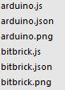

START
- 시작하기
- 엔트리 하드웨어 개발 튜토리얼
Common
- Node.js 개발 환경 세팅
- Git 개발 환경 세팅
Entryjs
- 시작하기
- 블록 명세 작성
- 블록 사용 등록
- 블록 모양별 개발 방법
- 하드웨어 블록 만들기
- 하드웨어 블록 번역작업
- 하드웨어별 블록생성 하기
- 하드웨어 블록 테스트하기
- 하드웨어 추가하기
Entry Hw
- 시작하기
- 하드웨어 모듈 추가하기
- 블루투스 하드웨어 추가하기
- 하드웨어 등록 서비스 신청하기
Entry Offline
- 시작하기
- 프로젝트 구조
- 개발하기
- 오브젝트 추가하기
- 다국어 작업하기
- 빌드하기
END
- 반영하기
Etc.
- Git 사용방법
- FAQ
하드웨어 모듈 추가하기
엔트리에 하드웨어를 추가하기 위한 가장 기본적인 단계 입니다. 하드웨어 모듈을 추가 함으로써 엔트리와 통신할수 있게 됩니다.
모듈의 위치
(your path)/app/modules/밑에 해당 모듈들이 추가되야 합니다. (your path)/app/next_modules/의 경우에는 시험적인 하드웨어 모듈 또는 차기 버전에 적용될 하드웨어 모듈이 들어 있습니다. next_modules안에 있는 모듈은 실제로 동작하지는 않습니다.
모듈의 구성
모듈은 모듈명.js, 모듈명.json, 모듈명.png의 3가지로 구성됩니다.

모듈 추가하기
하드웨어를 추가하는 기본적인 과정은 다음과 같습니다.
- .js 파일생성
- .json 파일생성
- 이미지 삽입
- 필요에 따라 드라이버 및 펌웨어 추가
알맞게 파일이 생성되면 실제 하드웨어 화면에 추가한 하드웨어가 표시되어 테스트가능 상태가 됩니다. 하드웨어 모듈은 ArduinoExt 모듈 소스를 참고하시고 작성하시면 좋습니다.
.js 파일생성
// 모듈 생성 |
.json 파일생성
{ |
이미지 삽입
이미지는 찌그러짐을 방지하기 위하여 정사각형의 이미지 이어야 하며 배경색이 투명색한 .png 파일이어야 합니다. 또한, 용량문제 때문에 너무 큰 이미지는 사용을 자제해 주시고, 적당한 크기의 이미지를 최대한 압축 및 최적화 후 넣어 주시면 됩니다.
https://tinypng.com/ 사이트 에서 간단하게 무료로
.png파일을 최적화 할 수 있습니다.
펌웨어 추가
모듈.json파일에서 등록한 펌웨어이름와 똑같은 .hex파일을 (your path)/app/custom_modules/flasher/ 위치에 넣어 주면 이후에 하드웨어 프로그램에서 자동적으로 해당 펌웨어를 업로드 합니다. 현재 펌웨어는 업로드는 아두이노 계열인 UNO와 NANO보드만 지원하고 있습니다. NANO보드에 펌웨어를 올리기 위해선 firmwareBaudRate속성의 값을 57600으로 설정해야 정상적으로 업로드가 가능합니다.
드라이버 추가
드라이버는 기본적으로 운영체제 별로 따로 설정하도록 되어 있으며, 해당 운영체제에 맞는 드라이버가 없는경우 드라이버 설치 버튼이 표시되지 않습니다. 드라이버 옵션에 작성한 경로에 맞추어 (your path)/app/drivers/폴더에 드라이버를 넣어 주면 됩니다.